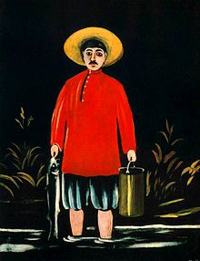

შემოქმედება
ფიროსმანის, როგორც მხატვრის აღმოჩენაში, მისი სურათების შეგროვებასა და შემოქმედების პროპაგანდაში
განსაკუთრებული ღვაწლი მიუძღვის ძმებ ზდანევიჩებს — მხატვარ კირილ და პოეტ ილიას, მხატვრებს მ. ლე დანტიუს, დ.
შევარდნაძეს, ლ. გუდიაშვილს, დ. კაკაბაძეს და სხვებს. უფრო გვიან — გ. ლეონიძეს, რომელმაც
მნიშვნელოვანი ცნობები მოიპოვა მისი ბიოგრაფიისათვის.
ფიროსმანის ნამუშევრები წარმოდგენილი იყო ქართველ მხატვართა I დიდ გამოფენაზე თბილისში
1918 წელს. 1920-იან წლებში იბეჭდებოდა წერილები პერიოდულ პრესაში, გამოიცა მისდამი მიძღვნილი კრებული. განსაკუთრებით
გაცხოველდა ინტერესი ფიროსმანისადმი 50-იან წლების შემდეგ — გამოიცა წიგნები საქართველოში, რუსეთში, უცხოეთში. შეიქმნა ბიოგრაფიული
ფილმი, დაიწერა მისდამი მიძღვნილი პიესები, მუსიკალური ნაწარმოებები; ფიროსმანის სურათების გამოფენა მოეწყო ყოფილ სსრკ-ის ქალაქებში
და დასავლეთ ევროპის მრავალ ქვეყანაში. თბილისში დაიდგა ფიროსმანის ძეგლი; მხატვრის მშობლიურ სოფელში — მირზაანში — გაიხსნა
ფიროსმანის მუზეუმი. მხატვრის ნამუშევართა დიდი ნაწილი ამჟამად ინახება საქართველოს ხელოვნების სახელმწიფო მუზეუმში, აგრეთვე ყოფილ
სსრკ-ისა და საზღვარგარეთის ზოგ მუზეუმებში, თბილისის ყოფილ სსრკ-ისა და უცხოეთის კერძო კოლექციებში. მის ნაწარმოებთა დიდი ნაწილის ქრონოლოგია დღემდე დაუდგენელია.

ფიროსმანის თემატიკას გარკვეული კვალი დაამჩნია იმ სოციალურმა გარემომ, რომელშიც უხდებოდა
ცხოვრება მხატვარს. მის მხატვრულ მემკვიდრეობაში დიდი ადგილი უჭირავს ქეიფის სცენებს, რომელიც არსებითად, თბილისელ
ვაჭარ-ხელოსანთა, მიკიტნების,ზოგჯერ თავადების ჯგუფურ პორტრეტებს წარმოადგენს („ბეგოს კამპანია“, „ქეიფი მეარღნე დათიკო
ზემელთან“, „თავადების ქეიფი მინდვრად“, „ხუთი თავადის ქეიფი“, 1906, ყველა — საქართველოს ხელოვნების მუზეუმი, თბილისი
და სხვა). ზოგჯერ ქეიფის სცენები გაშლილია პეიზაჟის ფონზე („სვირი“, საქართველოს ხელოვნების მუზეუმი, თბილისი), ან
ჩართულია მრავალფიგურიან „პანორამულ“ კომპოზიციებში („ვირის ხიდი“, „კახეთის ეპოსი“, „ქეიფი რთველში“).
თემატიკურად სცენებს ენათესავება ნატურმორტები და აბრები.
ქალი ვაჟით“, „გლეხკაცი ვაჟით“, „წყალზე მიმავალი ბავშვებიანი დედაკაცი“, „კალოობა“ - ყველა საქართველოს ხელოვნების მუზეუმი, თბილისი);
იშვიათად მიმართავდა ქალაქურ პეიზაჟებს („ბათუმი“, „ფუნიკულორი“ — ორივე საქართველოს ხელოვნების მუზეუმი, თბილისი). განსაკუთრებული
პოეტური ძალით არის აღბეჭდილი ფიროსმანაშვილის მიერ დახატული ღამის სცენები („არსენალის გორა ღამით“, მოსკოვი, კერძო კოლექცია;
„ყაჩაღმა ცხენი მოიპარა“, „დათვი მთვარიან ღამით“ — ორივე საქართველოს ხელოვნების მუზეუმი, თბილისი). მკვეთრი სოციალური
დახასიათებებით გამოირჩევა ფიროსმანაშვილის მიერ თბილისელი ხელოსნების, მედუქნეების, კინტოების, ბოჰემის წარმომადგენელთა,
აგრეთვე მუშების პორტრეტები („გოგონა საჰაერო ბუშტით“,მოსკოვი, კერძო კოლექცია; „მდიდარი კინტოს შვილი“, „მეეზოვე“,
„ორი მუშა“, „აქტრისა მარგარიტა“, „ორთაჭალის ტურფები“, „მუშა სოსო“, „მებადური“ — ყველა საქართველოს ხელოვნების
მუზეუმი, თბილისი და სხვა). სოციალური დაპირისპირება მკაფიოდ არის ნაჩვენები ცნობილ სურათში „უშვილო მილიონერი
და ღარიბი ქალი შვილებით“ (საქართველოს ხელოვნების მუზეუმი).
ფიროსმანაშვილის შემოქმედებაში დიდი ადგილი უჭირავს ანიმალისტურ ჟანრს (დღემდე ფიროსმანაშვილი
ერთადერთი ქართველი ანიმალისტია). უეჭველია, მხატვარი ცხოველთა გამოსახულებებში ხშირად გარკვეულ
სიმბოლურ-მორალურ აზრს აქსოვდა. განსაკუთრებით შთამბეჭდავია „ირემი“, „ჟირაფი“, „თეთრი ღორი გოჭებით“, „შავი ტახი“, „თეთრი დათვი“,
„არწივს კურდღელი დაუჭერია“ და სხვა (ყველა საქართველოს ხელოვნების მუზეუმი). ფიროსმანს იზიდავდა ისტორიული თემებიცა და პერსონაჟებიც
(„რუსთაველი“, „თამარ მეფე“, „ერეკლე მეორე“, „გიორგი სააკაძე“ — არსებობს
სხვადასხვა ვარიანტი; „შეთე გზას უჩვენებს თავად ბარიატინსკის შამილის დასაჭერად“ და სხვა). ფიროსმანის ზოგი სურათი ქართული თეატრის
სპექტაკლებით (დ. ერისთავის „სამშობლო“, ვ. გუნიას „და-ძმა“) არის შთაგონებული.
ფიროსმანი ჩვეულებრივ მუშამბაზე წერდა. მის სურათებში ადვილი შესამჩნევია, რომ ავტორს სპეციალური განათლება არ მიუღია, მაგრამ ეს არ უშლის ხელს მხატვრის
მიერ შექმნილი სამყაროს მთლიანობას, ერთგვარად ხელს უწყობს კიდეც მისი სურათების მკაფიო თავისებურებების გამოვლენას. ფიროსმანაშვილის
სურათების უპირველეს ძალას შეადგენს მათი შინაგანი სიმართლე, უშუალობა, დიდი ექსპრესიულობა, ხასიათის მკაფიო გამოკვეთა. სხვა
თვითნასწავლ მხატვართაგან განსხვავებით, ფიროსმანაშვილი მიზნად არ ისახავდა ბუნების ნატურალისტურ იმიტაციას, არ მისდევდა
წვრილმანებს, შესწევდა ყველაფერში არსებითის, ტიპურის დანახვისა და განზოგადების უნარი. მისი სურათების კოლორიტი მკაცრია,
ზოგჯერ თითქმის მონოქრომული (ბევრი სხვა თვითნასწავლი მხატვრისაგან განსხვავებით, რომლებსაც ფერადების სიჭრელე ხიბლავდა).
მათი აგება მოწმობს ავტორის მახვილ კომპოზიციურ ალღოს. ფიგურების განლაგება უმეტესად ფრონტალურია, იერატიკული, სახეები
არ გადმოგვცემს კონკრეტულ განწყობილებას; სივრცის გადმოცემა, პროპორციული შეფარდებები რამდენიმე პირობითია; განურჩევლად
ზომისა, ფიროსმანაშვილის სურათებს შინაგანი მნიშვნელოვანება და მონუმენტურობა ახასიათებს. ყველა ამ თვისებით ფიროსმანის
შემოქმედება ძველ ქართულ კედლის მხატვრობას ენათესავება.
მემკვიდრეობა
ფიროსმანის ძეგლი მირზაანში.
ერთლარიანი ფიროსმანის გამოსახულებით
როდესაც ფიროსმანს მემკვიდრეობას ვეცნობით, ნათელი ხდება მხატვრის ინტერესთა მრავალფეროვნება, რჩება შთაბეჭდილება, რომ მას
სავსებით ჩამოყალიბებული მსოფლგაგება ჰქონდა და შეგნებულად, თანამიმდევრულად ქმნიდა თავის მხატვრულ სამყაროს. ფიროსმანის
შემოქმედებამ XX საუკუნის 10-20-იან წლებში მიჯნაზე, როდესაც ხელოვნებაში მწვავედ დაისვა ქართული ეროვნული ფორმის ძიების საკითხი,
დიდი გამოძახილი პოვა ქართველ მხატვართა ახალ თაობის წარმომადგენლებში, რომელთაც სამართლიანად მიაჩნდათ, რომ ფიროსმანი ეროვნულ
ნიადაგზე ორგანულად აღმოცენებული მხატვარია. დღეს ფიროსმანის შემოქმედება საყოველთაო სახალხო სიყვარულით სარგებლობს.